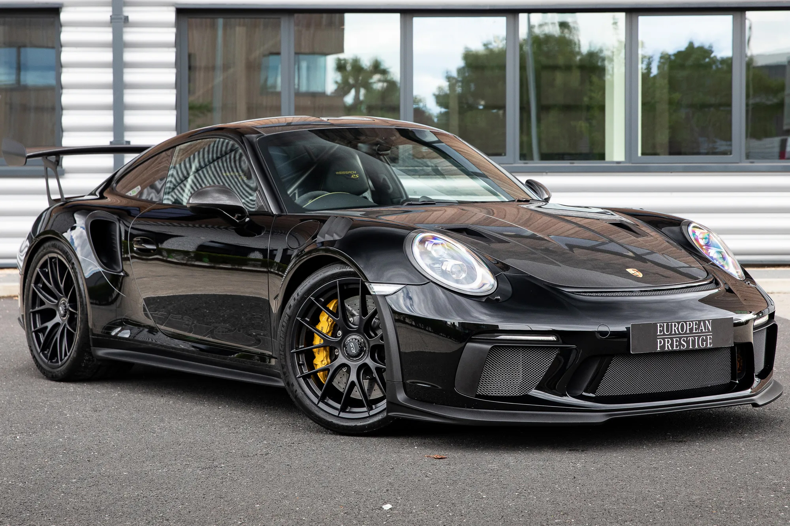
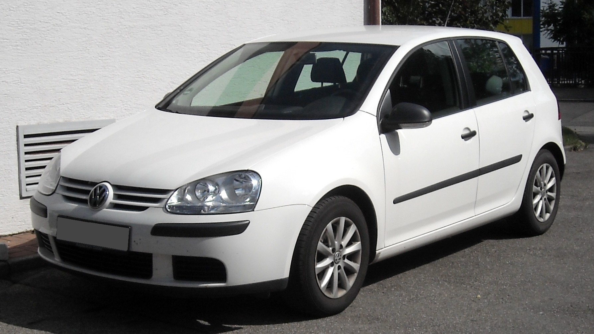
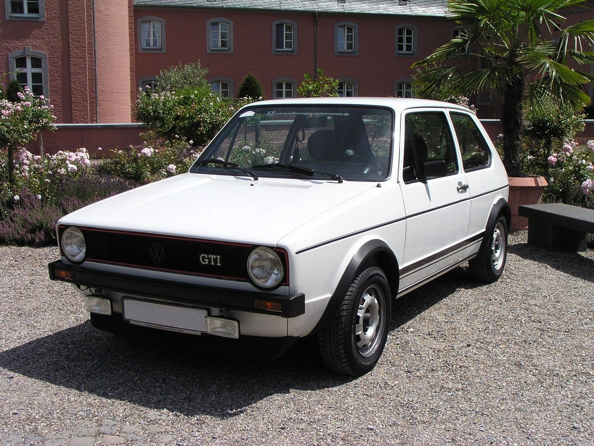
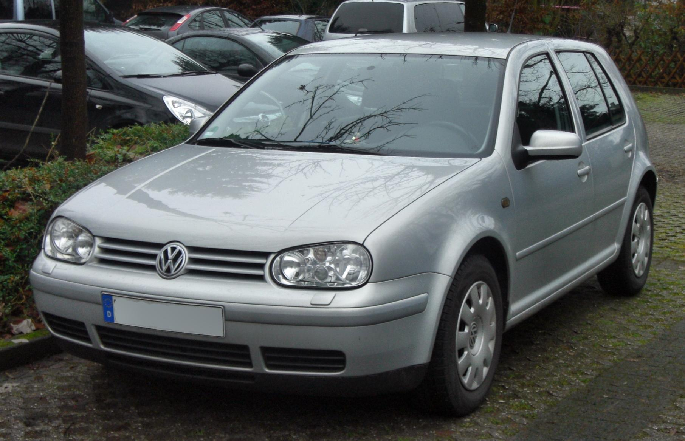
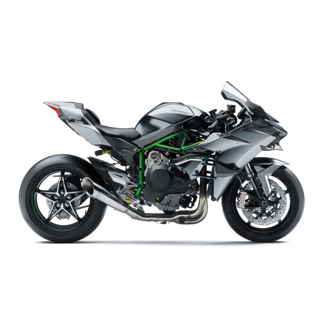
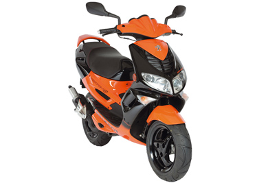
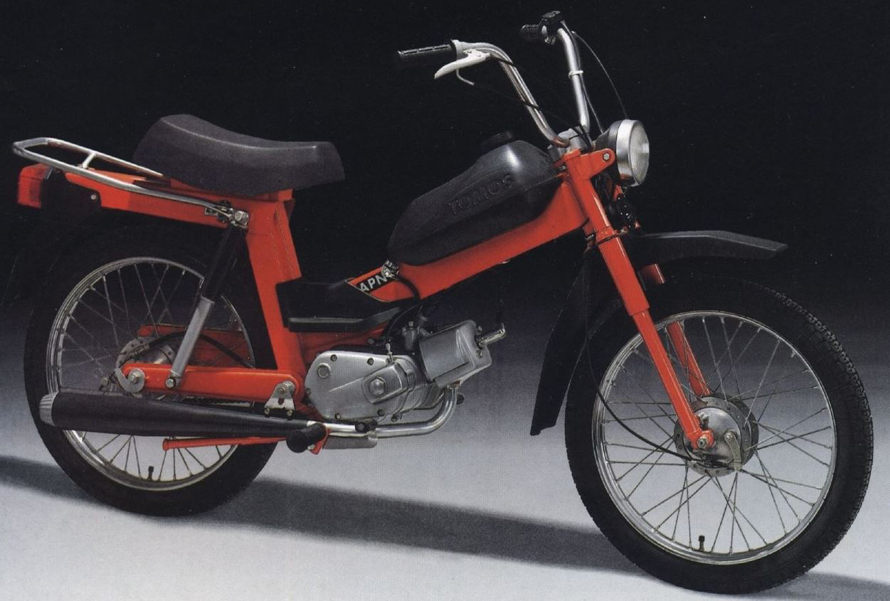
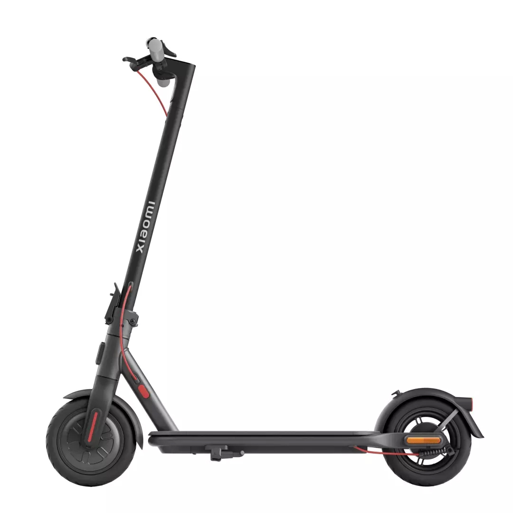
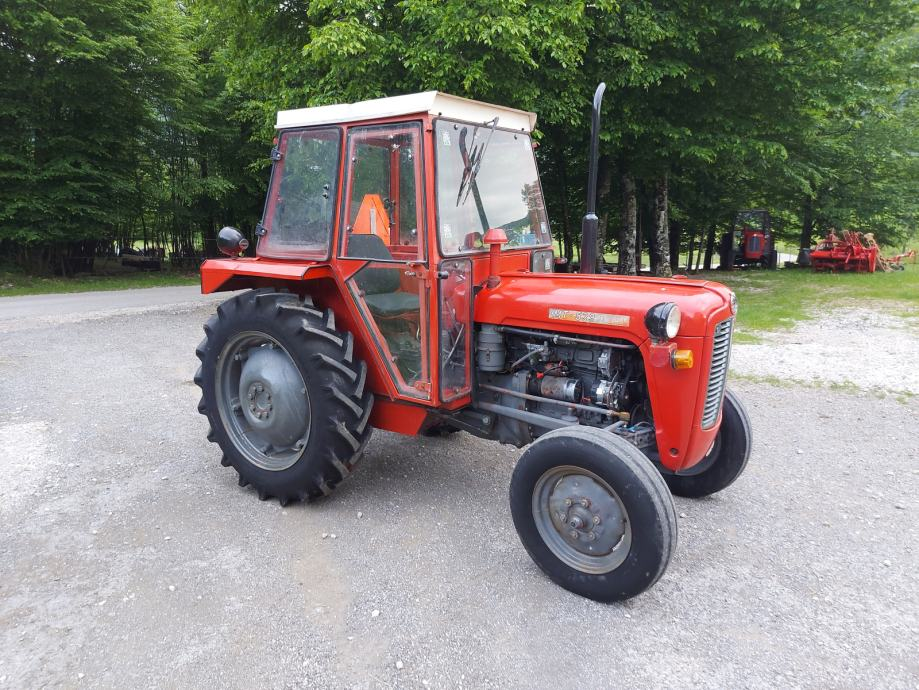

Visoko tražen 2019. (69) Porsche 911 Weissach GT3 RS,u crnoj boji i opremljen crnom kožom i Alcantara unutrašnjošću sa šavovima u GT Silver boji.Lamborghini Urus je prvi Super Sport Utility Vehicle na svijetu, spajajući dušu super sportskog automobila s praktičnom funkcionalnošću SUV-a. VW Golf V dobiva jednu stražnju osovinu sa četiri linkovima, koja omogućava bolje osobine tokom vožnje, pogotovo tokom krivina. Volkswagen Golf Mk1 je kompaktni automobil, prva generacija Volkswagen Golfa i nasljednik Bube. Sa četvrtom generacijom Golfova (interna oznaka šasije 1J) Volkswagen je postavio nove standarde kvaliteta za buduće proizvode koncerna. Ninja H2R jedan je od rijetkih motocikala koji uistinu zaslužuju da ih se zove instant ikonama. Peugeot Speedfight je skuter proizveden od strane Peugeot Motocycles. Dostupan je u modelima od 50 cc (3,1 kubičnih inča) i 100 cc (6,1 kubičnih inča), pri čemu se model mopeda od 50 cc koristi od strane vozača s ograničenim dozvolama diljem svijeta. Dostupan je u verzijama s hlađenjem zrakom ili skupljim verzijama s tekućinskim hlađenjem.. TOMOS je slovenska tvornica sa sjedištem u Kopru. Ime je kratica od Tovarna motornih koles Sežana (tvornica motorkotača Sežana) jer je prema planu trebala biti izgrađena u Sežani. Xiaomi Electric Scooter 4 Lite dolazi uz izlaznu snagu od 300W i maksimalnu brzinu od 25 km/h koje zajedno omogućuju još jednostavniju i udobniju vožnju romobilom. Traktor IMT 539 je univerzalni traktor koji sa sistemom od preko 100 priključnih strojeva omogućava raznovrsnu primjenu u poljoprivredi, voćarstvu, šumarstvu, komunalnim i drugim radovima.